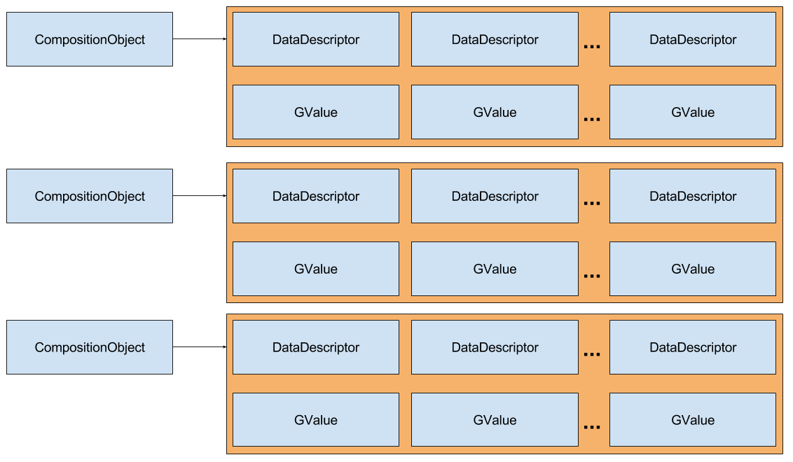
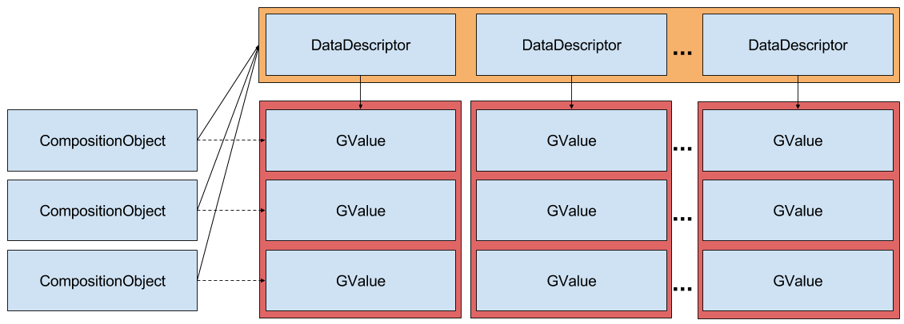

Why do I succeed? Lessons learned from a master student
Håkon Åmdal
Håkon Åmdal
-
Computer science, class of 2016
-
Complex computer systems
-
Nerd
-
Love programming!
Volunteering
University of Minnesota
2014-2015
Where model-driven engineering meets database technology
Norgesgruppen needs to analyze billions of transactions.
...and they have no clue what they are looking for.
From row-store to column-store


Memory footprint reduced by 70%
55362ms -> 25ms (2200X)
Where model-driven engineering meets database technology
...and the platform optimize the storage without modeller intervention.
So why do I succeed?
Network
Decent academic results
Dream job
Hard work
Curiosity
Work smart
Exams are my cup of tea
Network
Volunteering
Serendipity and the "Yes"-man
Dream job
Network
Decent academic results
Preparation
The more you have to do, the more you do.
Hard work applied over time makes things easier
Grasp every opportunity to learn something new
Use exercise solutions actively and correcltly
Learn your tools
Read relevant material prior to or after lectures
Encourage studying abroad
Representatives for social enviroment in class
IDI and Abakus collaboration